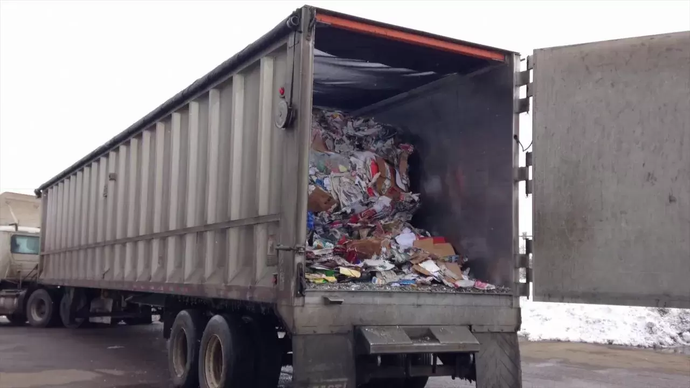

Our mission
Divert high volumes of post-industrial scrap materials destined for landfill by finding a second life for them.
100% Canadian owned and operated, recycling industrial plastic scrap in Campbellford, Ontario since 1998.
Min-Tech has been a pioneer in environmentally friendly industrial plastic scrap recycling since 1998. Our 42,000 square foot facility sits on fifteen acres in the Tanner Industrial Park in Campbellford, Ontario.
With a unique full-service offering, Min-Tech is a leader in helping manufacturers divert waste away from landfill by finding a second life for discarded industrial scrap.
Min-Tech is owned and operated by president Dale McLellan, who brings 35 years of experience in the scrap sector — including 10 years operating a plastic pelletizing manufacturing facility in Quebec. He founded Min-Tech Marketing in 1998 and Min-Tech Environmental in 2018.
From 1991 to 2000, Dale spent considerable time in China, consulting with partners to modernize five plastic manufacturing facilities with U.S. equipment and more efficient processes. Min-Tech also supplied Trex, a major plastic/lumber manufacturer, with millions of pounds of reclaimed plastic scrap over a two-year period.

Our mission is to divert high volumes of post-industrial scrap materials destined for landfill by finding a second life for them.
Divert high volumes of post-industrial scrap materials destined for landfill by finding a second life for them.
We manufacture and market products made from high quality, clean, recyclable materials.
Two kinds of client relationships — those parting with industrial scrap, and those buying reclaimed material and finished goods.
Companies looking to part with industrial scrap using environmentally friendly methods. In 2002, after several years of developing the relationship, Min-Tech signed an agreement with a Fortune 500 consumer goods manufacturer to take all the scrap from its facility — a consistent supply of 100% clean, post-industrial grade LDPE/fibre mix ever since.
Only a handful of facilities in North America are large enough to provide the volume of reclaimed post-industrial HDPE/LDPE scrap that operation requires.
Buyers of industrial scrap, or of goods Min-Tech manufactures from it, located around the world and specializing in the recycling industry for over 30 years.
With that reach we have launched dozens of products into the market, building loyalty on both sides — and zero-waste solutions that keep our partners coming back.

“For more than 20 years, Min-Tech has been a leader in Health & Safety in the recycling industry. Min-Tech is honoured to be nominated by the Northumberland Manufacturers Association for this award.”
We're a Canadian team in Campbellford, Ontario, recycling industrial plastic and manufacturing spill control products. If you want hands-on work with a real environmental impact, we'd like to hear from you.
Get in touch about careersMin-Tech is part of the Clean Lifecycle Network (CLN), a group of leading circular economy solutions companies recovering hard-to-recycle post-industrial and hazardous materials, and recapturing them as high-value resources.
Visit clnenv.com (opens in a new window)Talk to us about the Buy Back Program, product destruction, or a zero-waste solution for your facility.